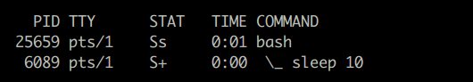
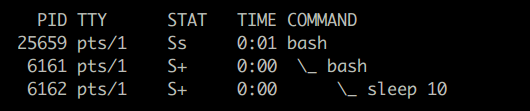

Subshells
Shell 에서 명령을 실행하면 새로운 프로세스가 생성되어 실행됩니다.
이때 명령을 호출한 process 가 parent 가 되고 새로 실행되는 명령이 child process 가 됩니다.
다음은 프롬프트 상에서 /bin/sleep 외부 명령을 실행한 예인데 현재 bash shell process 아래서
sleep 명령의 child process 가 실행되는 것을 볼 수 있습니다.

이번에는 AA.sh 라는 shell 스크립트 파일을 만들어서 실행시킨 예인데 스크립트 파일 실행을 위해 bash child process 가 하나 더 생성되고 그 아래서 sleep 명령이 실행되는 것을 볼 수 있습니다.

이번에는 프롬프트에서 아래와 같은 4 종류의 명령을 실행한 결과입니다.
그런데 위에서처럼 shell 스크립트 파일을 실행한 것도 아닌데 bash child process 가 하나 더 생성된 후에
그 아래서 sleep 명령이 실행되는 것을 볼 수 있습니다.
이렇게 ( ) $( ) ` ` | & 를 이용하여 명령을 실행시킬 때 생성되는 shell 을 subshell 이라고 합니다.
$ ( sleep 10; echo ) # 1. ( )
$ `sleep 10; echo` # 2. $( ), ` ` backtick 명령치환
$ echo | { sleep 10; echo ;} # 3. | 파이프
$ command & # 4. background 로 실행되는 명령

Child process 가 parent process 로부터 상속받는 것들
- 현재 작업 디렉토리
- export 된 환경 변수, 함수
- 현재 설정되어 있는 file descriptor 들 ( stdin, stdout, stderr ... )
- ignore 된 신호 ( trap '' INT )
다음은 테스트를 위해서 프롬프트 상에서 먼저 실행한 명령입니다.
$ echo "PID : $$, PPID : $PPID"
PID : 10875, PPID : 1499 # 현재 shell PID 와 PPID
$ pwd # 현재 working 디렉토리
/home/mug896/tmp
$ var1=100 var2=200
$ export var1 # var1 만 export
$ f1() { echo "I am exported function" ;}
$ f2() { echo "I am not exported function" ;}
$ export -f f1 # f1 만 export
$ trap '' SIGINT # trap 설정 : INT 신호는 ignore
$ trap 'rm -f /tmp/tmpfile' SIGTERM
$ tty
/dev/pts/13
$ exec 3> /dev/null # FD 3 생성
다음은 child process 에서의 결과를 보기 위해서 다음과 같이 test.sh 파일을 작성한 후에 실행해봅니다.
---------- test.sh ----------
#!/bin/bash
echo "PID : $$, PPID : $PPID"
pwd
echo "var1 : $var1"
echo "var2 : $var2"
f1
f2
trap
ls -l /proc/$$/fd
-----------------------------
$ ./test.sh
PID : 11717, PPID : 10875 # PID, PPID 값이 다르다.
/home/mug896/tmp
var1 : 100
var2 : # export 하지않은 변수는 값이 표시안됨
I am exported function
./test.sh: line 6: f2: command not found # export 안된 함수는 정의되어 있지 않음
trap -- '' SIGINT # ignore 한 trap 설정만 표시됨
total 0
lrwx------ 1 mug896 mug896 64 Aug 8 16:07 0 -> /dev/pts/13 # FD 0,1,2 는 동일
lrwx------ 1 mug896 mug896 64 Aug 8 16:07 1 -> /dev/pts/13
lrwx------ 1 mug896 mug896 64 Aug 8 16:07 2 -> /dev/pts/13
l-wx------ 1 mug896 mug896 64 Aug 8 16:07 3 -> /dev/null # parent 에서 open 했던 FD
Subshell 이 추가해서 상속받는 것들
- export 안된 변수, 함수들
- 현재 shell 의 PID 를 나타내는
$$변수값 - parent PID 를 나타내는
$PPID변수값 - trap handler 설정 ( trap 'rm -f tmpfile' INT )
이번에는 subshell 의 경우를 알아보기 위해서 아래와 같이 실행을 해보면 위의 child process 와 차이가 있는 것을 알 수 있습니다. 다시 말해서 subshell 은 현재 shell 환경과 동일하다고 생각하면 됩니다. subshell 에서 테스트를 실행한 결과는 현재 shell 에서 실행한 것과 차이가 없습니다.
$ ( echo "PID : $$, PPID : $PPID"
> pwd
> echo "var1 : $var1"
> echo "var2 : $var2"
> f1
> f2
> trap
> ls -l /proc/$BASHPID/fd )
PID : 10875, PPID : 1499 # PID, PPID 가 현재 shell 과 동일하게 나온다
/home/mug896/tmp
var1 : 100
var2 : 200 # export 하지않은 변수값도 표시되고
I am exported function
I am not exported function # export 하지않은 함수도 실행된다.
trap -- '' SIGINT
trap -- 'rm -f /tmp/tmpfile' SIGTERM # trap 설정도 모두 표시된다.
total 0
lrwx------ 1 mug896 mug896 64 08.08.2015 15:20 0 -> /dev/pts/13
lrwx------ 1 mug896 mug896 64 08.08.2015 15:20 1 -> /dev/pts/13
lrwx------ 1 mug896 mug896 64 08.08.2015 15:20 2 -> /dev/pts/13
l-wx------ 1 mug896 mug896 64 08.08.2015 15:20 3 -> /dev/null
Parent process 와 child process 의 관계
- Parent process 에서 상속받은 값들은 child process 에서 마음대로 읽고 쓸 수 있으나 변경한 값이 parent process 에 적용되지는 않습니다. 또한 child process 에서 shell 환경 변수를 변경하거나 옵션 설정을 변경해도 parent process 에는 영향을 미치지 않습니다.
- parent process 에서 특정 값을 변경해도 그것이 이미 실행 중인 child process 에는 반영되지 않습니다.
- child process 에서 export 할 경우 child 의 child 에게 적용이 되지 parent process 나 다른 shell process 에는 적용되지 않습니다.
Subshell 의 특징, 활용
parent process 에서 설정한 변수나 함수는 export 해야지 child process 에서 사용할 수 있습니다. 하지만 subshell 에서는 export 하지 않아도 사용할 수가 있습니다.
$ AA=100
$ ( echo AA value = "$AA" ) # 변수 AA 를 export 하지 않아도 값을 사용할 수 있다.
AA value = 100
현재 shell 에서 사용중인 변수는 subshell 에서 읽고, 쓰고 할 수 있습니다. 그러나 변경된 값이 현재 shell 에 적용되지는 않으므로 주의해야 합니다.
$ AA=100
$ ( AA=200; echo AA value = "$AA" ) # subshell 에서 값을 200 으로 변경.
AA value = 200
$ echo "$AA" # 하지만 현재 shell 에서는 변함이없다.
100
subshell 을 생성하여 사용한 변수나 shell 환경 설정 변경은 subshell 이 종료되면 사라집니다.
$ echo -n "$IFS" | od -a
0000000 sp ht nl
# subshell 에서 IFS 값을 ':' 로 변경하여 사용.
$ ( IFS=:; echo -n "$IFS" | od -a )
0000000 :
# subshell 이 종료된 후에는 기존의 IFS 값으로 복귀된다.
$ echo -n "$IFS" | od -a
0000000 sp ht nl
##################################################
$ test -o pipefail; echo $?
1
# subshell 에서 쉘옵션을 변경하여 사용.
$ ( set -o pipefail; test -o pipefail; echo $? )
0
# subshell 이 종료후엔 이전상태로 복귀된다.
$ test -o pipefail; echo $?
1
##################################################
$ set -- 11 22 33
$ echo "$@"
11 22 33
# positional parameters 를 subshell 에서 설정하여 사용
$ ( set -- 44 55 66; echo "$@" )
44 55 66
# subshell 종료후엔 기존 값으로 복귀된다.
$ echo "$@"
11 22 33
##################################################
$ ulimit -c
0
# core file 생성을 위해 subshell 을 이용해 일시적으로 ulimit 값을 설정
$ ( ulimit -c unlimited; ulimit -c ; ... )
unlimited
# subshell 종료후 'ulimit -c' 값이 다시 0 으로 복귀된다.
$ ulimit -c
0
#################################################
$ echo $LC_ALL
$
# LC_ALL 환경변수 값을 export 를 이용해 일시적으로 subshell 이하 프로세스에 적용
$ ( export LC_ALL=C
join -j 1 -a 1 <(sort file1) <(sort file2) )
$ echo $LC_ALL
$
subshell 에서 cd 한것은 종료 후에는 이전 상태로 돌아옵니다.
$ pwd
/home/mug896/Documents
# subshell 을 이용하여 cd 한 후 작업
$ ( cd ~/Pictures; pwd; ... )
/home/mug896/Pictures
# subshell 종료 후엔 자동으로 이전 상태로 복귀가 된다.
$ pwd
/home/mug896/Documents
subshell 은 프로세스 이므로 exit 명령을 사용하여 종료합니다.
$ ( echo hello; exit 3; echo world )
hello
$ echo $?
3
디버깅을 위해 -E | set -o errtrace or -T | set -o functrace 옵션을 이용해 trace 할때도 subshell 까지만 됩니다. child process 는 trace 되지 않습니다.
$$ 와 $BASHPID
$$ 변수는 현재 shell PID 를 나타내는 변수인데 subshell 에서도 동일한 값을 가집니다.
하지만 subshell 도 엄연히 프로세스 이므로 PID 값을 가지는데 $BASHPID 변수를 통해서 구할 수 있습니다.
$ echo $$ $BASHPID
2881 2881
$ ( echo $$ $BASHPID )
2881 4609
$SHLVL 과 $BASH_SUBSHELL
$SHLVL 은 child process 를, $BASH_SUBSHELL 은 subshell 을 의미합니다.
프롬프트 상일 경우.
$SHLVL값은 1 (shell process 가 실행중 이므로),$BASH_SUBSHELL값은 0 이 됩니다.( )subshell 메타문자를 이용해서 실행$BASH_SUBSHELL값이 올라갑니다.shell 스크립트 파일을 작성해서 실행
이경우는 child process 가 생성되고$SHLVL값이 올라갑니다.bash -c 'command ...'
이때도 child process 가 생성되고$SHLVL값이 올라갑니다.
$ echo SHLVL: $SHLVL, BASH_SUBSHELL: $BASH_SUBSHELL # 현재 프롬프트 shell 상태
SHLVL: 1, BASH_SUBSHELL: 0
$ bash # bash 실행
$ echo SHLVL: $SHLVL, BASH_SUBSHELL: $BASH_SUBSHELL
SHLVL: 2, BASH_SUBSHELL: 0
$ bash
$ echo SHLVL: $SHLVL, BASH_SUBSHELL: $BASH_SUBSHELL
SHLVL: 3, BASH_SUBSHELL: 0
$ exit # exit 으로 shell 종료
exit
$ echo SHLVL: $SHLVL, BASH_SUBSHELL: $BASH_SUBSHELL
SHLVL: 2, BASH_SUBSHELL: 0
$ exit
exit
$ echo SHLVL: $SHLVL, BASH_SUBSHELL: $BASH_SUBSHELL
SHLVL: 1, BASH_SUBSHELL: 0
$ bash -c 'echo SHLVL: $SHLVL, BASH_SUBSHELL: $BASH_SUBSHELL' # bash -c 로 실행
SHLVL: 2, BASH_SUBSHELL: 0
$ ( echo SHLVL: $SHLVL, BASH_SUBSHELL: $BASH_SUBSHELL
( echo SHLVL: $SHLVL, BASH_SUBSHELL: $BASH_SUBSHELL
( echo SHLVL: $SHLVL, BASH_SUBSHELL: $BASH_SUBSHELL )))
SHLVL: 1, BASH_SUBSHELL: 1
SHLVL: 1, BASH_SUBSHELL: 2
SHLVL: 1, BASH_SUBSHELL: 3
활용 예제 )
#!/bin/bash
echo "START ..."
echo "processing step 1 ..."
echo "processing step 2 ..."; ( exit 1 )
if [ $? != 0 ]; then
echo ">>> step 2 처리중 오류가 발생했습니다. 수정후 exit 하세요"
export PS1='>>> \w \$ '
bash --norc
fi
echo "processing step 3 ..."
echo "processing step 4 ..."
echo "DONE."
########### 실행 결과 ##########
START ...
processing step 1 ...
processing step 2 ...
>>> step 2 처리중 오류가 발생했습니다. 수정후 exit 하세요
>>> ~/tmp $ date
Mon Apr 20 11:35:21 KST 2020
>>> ~/tmp $ echo $SHLVL
3
>>> ~/tmp $ exit
exit
processing step 3 ... # exit 한 후에 나머지 명령들이 실행된다.
processing step 4 ...
DONE.
Subshell 주의할점
다음은 스크립트 작성시 subshell 로인해 범하기 쉬운 오류들에 대한 예제입니다.
예제 .1
#!/bin/bash #!/bin/bash
index=30 index=30
change() { change() {
index=40 index=40
} }
result=$( change; echo "done" ) change
echo $index echo $index
########## output ########## ######## output #######
30 40
change 함수가 실행되어 index 값으로 40 을 기대하였으나 30 이 나왔습니다.
change 함수가 $( ) 안에서 실행됐으므로 subshell 에서 실행되어
parent 프로세스 변수인 index 값을 변경할 수 없습니다.
syscat() {
local recursive=false val
IFS=$'\n'
set -- $( for val; do [ "$val" != "foo" ] && echo "$val" || recursive=true; done )
unset -v IFS
if $recursive; then . . .
}
위의 코드는 syscat 명령에 전달된 인수들중 foo 를 제거해$@ 값을 다시 설정하고
recursive 변수값을 false 에서 true 로 변경하는 코드입니다.
그런데 recursive=true 문장이 $( ) 안에서 실행됐으므로 parent 프로세스 변수인 recursive
값을 true 로 변경할 수 없습니다.
예제 .2
$ echo hello | read var; echo $var
$
$ echo hello | { read var; echo $var ;}
$ hello
echo hello 와 read var 는 | 에 의해 연결돼 있으므로 각각 subshell 에서 실행이 되고
종료후에 echo $var 가 현재 shell 에서 실행되므로 subshell 에서 설정한 변수값을
echo $var 에서 읽을 수 없습니다. 두번째와 같이 { ;} 명령 group 을 이용하면
read var 와 echo $var 두 명령이 함께 subshell 에서 실행되므로 원하는 값을 출력할 수 있습니다.
예제 .3
#!/bin/bash
nKeys=0
cat datafile | while read -r line
do
#...do stuff
nKeys=$((nKeys + 1))
done
echo Finished writing $nKeys keys
########### output ###########
Finished writing 0 keys
결과값으로 while 문으로 인해 증가한 $nkeys 값을 기대하였으나 마지막 문장의
$nkeys 값은 0 이 표시 되었습니다. while 문이 파이프 | 로 인해 subshell 에서 실행되어
parent 프로세스 변수인 nkeys 값을 변경할 수 없습니다. 다음과 같이 수정합니다.
#!/bin/bash
nKeys=0
while read -r line
do
#...do stuff
nKeys=$((nKeys + 1))
done < datafile
echo Finished writing $nKeys keys
########### output ###########
Finished writing 10 keys
Subshell 과 종료 상태 값
Subshell 은 현재 스크립트 프로세스 아래 새로 프로세스가 생성되는 것이므로
exit 명령을 실행하여도 전체 스크립트가 종료되지는 않습니다.
다음을 보면 파이프에 의해 생성되는 subshell 에서 exit 명령을 실행하였지만
스크립트가 종료되지 않고 끝까지 실행됩니다.
$ cat test.sh
#!/bin/bash
echo start...
date | { cat; exit 3 ;} # exit 3 은 파이프에 의해 생성되는 subshell 에서 실행되므로
echo $? # 전체 스크립트가 종료되지 않는다.
echo end...
$ ./test.sh
start...
Sat Sep 11 09:19:19 KST 2021
3
end... # 끝까지 실행된다.
$ echo $?
0 # 종료 상태 값도 0 이 된다.
다음과 같이 || 연산자를 이용하거나 set -o errexit 옵션을 이용하면 스크립트가 종료됩니다.
$ cat test.sh
#!/bin/bash
echo start...
date | { cat; exit 3 ;} || exit 4 # || 연산자 사용
echo end...
$ ./test.sh
start...
Sat Sep 11 09:30:16 KST 2021
# 스크립트가 종료된다.
$ echo $?
4
------------------------------------------------------------
$ cat test.sh
#!/bin/bash
set -o errexit # errexit 옵션설정
echo start...
date | { cat; exit 3 ;}
echo end...
$ ./test.sh
start...
Sat Sep 11 09:31:31 KST 2021
# 스크립트가 종료된다.
$ echo $?
3
shell 함수에서도 마찬가지 입니다.
$ foo() { echo start...; date | { cat; return 3 ;}; echo end... ;}
$ foo
start...
Sat Sep 11 09:39:14 KST 2021
end... # return 되지 않고 끝까지 실행된다.
$ echo $?
0
---------------------------------------------------------------
# || 연산자 사용
$ foo() { echo start...; date | { cat; return 3 ;} || return 4; echo end... ;}
$ foo
start...
Sat Sep 11 09:41:27 KST 2021
$ echo $?
4
그런데 이와 같은 방법은 exit 명령이 파이프 명령 라인의 끝부분에 위치할 경우에만
해당되는 것으로 만약에 파이프 명령 라인의 중간에 위치할 경우는 종료되지 않습니다.
# exit 명령이 파이프 명령 라인의 중간에 위치하여 || exit 나 errexit 을 사용해도 종료되지 않는다.
#!/bin/bash #!/bin/bash
echo start... set -o errexit
date | { cat; exit 3 ;} | cat || exit 4 echo start...
echo end... date | { cat; exit 3 ;} | cat
echo end...
$ ./test.sh
start... $ ./test.sh
Sat Sep 11 10:02:20 KST 2021 start...
end... Sat Sep 11 10:02:20 KST 2021
end...
이것은 파이프 명령 라인의 경우 기본적으로 마지막에 위치한 명령의 종료 상태 값만 인식하기 때문인데요.
파이프 명령 라인 모두에서 오류 종료 상태 값을 인식하려면 set -o pipefail
옵션을 사용해야 합니다.
#!/bin/bash #!/bin/bash
set -o pipefail set -o pipefail -o errexit
echo start... echo start...
date | { cat; exit 3 ;} | cat || exit 4 date | { cat; exit 3 ;} | cat
echo end... echo end...
$ ./test.sh $ ./test.sh
start... start...
Sat Sep 11 10:06:18 KST 2021 Sat Sep 11 10:07:50 KST 2021
$ echo $? $ echo $?
4 3
Subshell optimization
위에서 살펴본 바와 같이 subshell 에서 외부 명령이 실행될 때는 subshell 프로세스 아래 또 해당 명령의 프로세스가 생성되어 실행됩니다. 그런데 이것은 subshell 에서 실행할 명령이 하나만 존재하거나 ( 예: 파이프 ), 아니면 명령 리스트 중에서 마지막에 위치한 명령이 실행될 때는 필요가 없는 것입니다. 별책부록의 subshell 부분을 보면 subshell 에서 실행되는 3 개의 date 명령 중에서 마지막 명령은 따로 fork 을 하지 않고 기존 subshell 을 이용해 실행하는 것도 여기에 해당됩니다. 일종의 optimizing 으로 위에서 subshell 을 설명하기 위해 echo 명령을 붙인 이유이기도 합니다.
좀더 자세한 설명은 여기 를 참조하세요
Quiz
bash 에서는 $BASHPID 변수를 이용하면 subshell 의 PID 정보를 구할 수 있습니다.
하지만 sh 에서는 해당 변수를 사용할 수 없는데요.
sh 에서 subshell PID 값을 구하려면 어떻게 할까요?
cd명령은 shell 의 builtin 명령이므로 아래 cd 명령에 사용된 /proc/self 는 subshell 자신이 됩니다. /proc/self 는 PID 번호 디렉토리의 symbolic link 이므로-P옵션을 이용해 cd 한 후$PWD변수값을 이용하면 PID 값을 출력할 수 있습니다.또 다른 방법은
$PPID변수를 이용하는 것입니다. 기본적으로 subshell 의$PPID값은 parent shell 에서 상속되므로 같은 값을 가지지만sh -c형식을 이용하면 subshell 의$PID값을 구할 수 있습니다.
sh$ cd -P /proc/self
sh$ echo $PWD
/proc/19482
sh$ (( cd -P /proc/self && echo ${PWD##*/} ); cd -P /proc/self && echo ${PWD##*/}); echo $$
24890 # subshell PID
24889 # subshell PID
24850
-------------------------------------------------------------------------
# 기본적으로 $PPID 값은 parent shell 에서 상속되므로 subshell 에서 같은 값을 가진다.
sh$ (( echo $PPID ); echo $PPID ); echo $PPID
19482
19482
19482
# 'sh -c' 형식을 이용하면 subshell PID 값을 구할 수 있습니다.
sh$ echo $$; ( PID=$( sh -c 'echo $PPID' ); echo $PID )
24608
24611 # subshell PID
sh$ (( echo $( sh -c 'echo $PPID' )); echo $( sh -c 'echo $PPID' )); echo $$
24852 # subshell PID
24851 # subshell PID
24850
다음과 같이 작성하면 각 단계의 subshell 이 명령 리스트 중에서 마지막으로 실행되는 명령에 해당되어 subshell optimization 으로인해 같은 값이 출력되는 것을 볼 수 있습니다.
sh$ ( cd -P /proc/self && echo ${PWD##*/}; \
( cd -P /proc/self && echo ${PWD##*/}; \
( cd -P /proc/self && echo ${PWD##*/} )))
25731
25731
25731
sh$ ( echo $( sh -c 'echo $PPID'); \
( echo $( sh -c 'echo $PPID'); \
( echo $( sh -c 'echo $PPID' ))))
25433
25433
25433
bash 는 위와 같은 경우에도 다른 값이 출력됩니다.
$ ((( echo $BASHPID ); echo $BASHPID ); echo $BASHPID )
6882
6881
6880
$ ( echo $BASHPID; ( echo $BASHPID; ( echo $BASHPID )))
6898
6899
6900